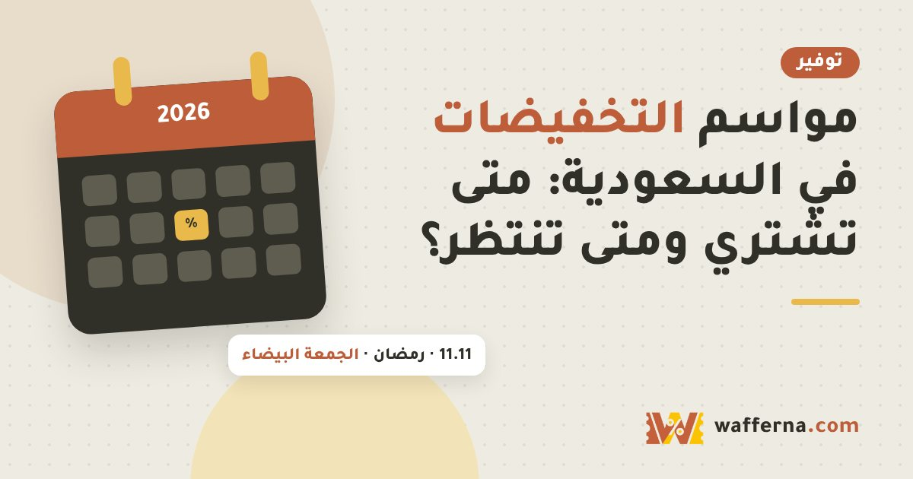

موسم 11.11 والجمعة البيضاء 2026 في السعودية: المواعيد وطريقة الاستعداد

نوفمبر هو أقوى شهر للعروض: يبدأ بـ 11.11 ثم تأتي الجمعة البيضاء. هذه الصفحة تجمع لك المواعيد، وطريقة استعداد بسيطة تحميك من الشراء المتسرع والخصومات الوهمية.
مواعيد المواسم في 2026
| الموسم | الموعد | ملاحظة |
|---|---|---|
| 11.11 (علي اكسبرس) | 11 نوفمبر، ومرحلة تمهيدية من 8 إلى 10 نوفمبر حسب جدول منشور | قد تختلف المواعيد بحسب المنطقة، فتأكد من صفحة الحملة في التطبيق |
| الجمعة البيضاء | الجمعة 27 نوفمبر | تبدأ بعض المتاجر قبلها بأيام وتستمر بعدها، وكل متجر يعلن موعده |
| الاثنين الإلكتروني | الاثنين 30 نوفمبر | يركّز غالباً على الإلكترونيات والمتاجر العالمية |
المواعيد أعلاه استناداً إلى مصادر عامة، وليست إعلاناً رسمياً من متجر بعينه. أي نسبة خصم تراها ستكون من المتجر نفسه، ونحن لا ننشر خصومات قبل ظهورها فعلاً.
شاهد: ليش طلبية بـ230 ريال صارت 282؟
فيديو مدته دقيقة و14 ثانية، والأرقام مثال توضيحي. شاهده على يوتيوب.
استعد قبل الموسم: 6 خطوات
- اكتب قائمة أمنيات محددة: ما تحتاجه فعلاً، لا ما تغريك به الإعلانات.
- حدّد ميزانية ثابتة: وسقفاً لا تتجاوزه مهما ظهرت من عروض.
- سجّل سعر كل منتج الآن: ثم قارنه يوم العرض. هكذا تعرف الخصم الحقيقي، وتقرأ أيضاً كيف تعرف أن الخصم حقيقي.
- احسب السعر النهائي: مع الشحن والضريبة، وللشحن الدولي استخدم حاسبة الجمارك والضريبة.
- جهّز حسابك ووسيلة الدفع: وأضف عنوان التوصيل مسبقاً حتى لا تضيع دقائق وقت العرض.
- اعرف كيف تتتبع الطلب: وراجع دليل تتبع الشحنات لأن الضغط على الشحن يزيد في المواسم.
11.11 أم الجمعة البيضاء؟
- منتجات من علي اكسبرس والمتاجر الصينية: غالباً 11.11 هو موسمها الأساسي، لكن الشحن قد يأخذ وقتاً.
- إلكترونيات ومتاجر محلية: قارن بين العرضين، فقد تكون الجمعة البيضاء أنسب مع توصيل أسرع.
- إذا كانت حاجتك مستعجلة: الأفضل متجر محلي بتوصيل سريع بدل انتظار شحنة دولية.
للصورة الأوسع عن مواسم السنة اقرأ مواسم التخفيضات في السعودية: متى تشتري ومتى تنتظر.
أخطاء تتكرر في المواسم
- الشراء بدافع العدّاد التنازلي دون مقارنة.
- تصديق نسبة الخصم دون معرفة السعر السابق.
- نسيان الجمارك والشحن في الطلبات الدولية.
- الدفع في مواقع غير معروفة، وراجع أخطاء التسوق أونلاين.
الأسئلة الشائعة
متى الجمعة البيضاء 2026 في السعودية؟
تقع الجمعة البيضاء عادة في آخر جمعة من نوفمبر، وفي 2026 توافق يوم الجمعة 27 نوفمبر. بعض المتاجر تبدأ عروضها قبل ذلك بأيام، وكل متجر يعلن موعده بنفسه، فتأكد من إعلانه الرسمي.
متى يبدأ عرض 11.11 في علي اكسبرس؟
اليوم الرئيسي لعروض 11.11 هو 11 نوفمبر، وتنشر بعض المصادر مرحلة تمهيدية قبله من 8 إلى 10 نوفمبر ثم استمرار العروض حتى 19 نوفمبر. هذه الجداول قد تختلف بحسب المنطقة والتطبيق، فاعتمد على صفحة الحملة داخل التطبيق.
هل أشتري في 11.11 أم أنتظر الجمعة البيضاء؟
لا توجد قاعدة ثابتة. إذا كان المنتج من علي اكسبرس أو متاجر الصين فعروض 11.11 غالباً الأنسب، وإذا كان من متاجر محلية أو إلكترونيات فقارن مع الجمعة البيضاء. الأفضل أن تتابع سعر المنتج قبل الموسم وتشتري إذا وصل لسعر تراه جيداً.
كيف أتأكد أن الخصم حقيقي؟
تابع سعر المنتج قبل الموسم بأسبوعين على الأقل، وقارن بين المتاجر، واحسب السعر النهائي مع الشحن والضريبة. التفاصيل في مقال كيف تعرف أن الخصم حقيقي.